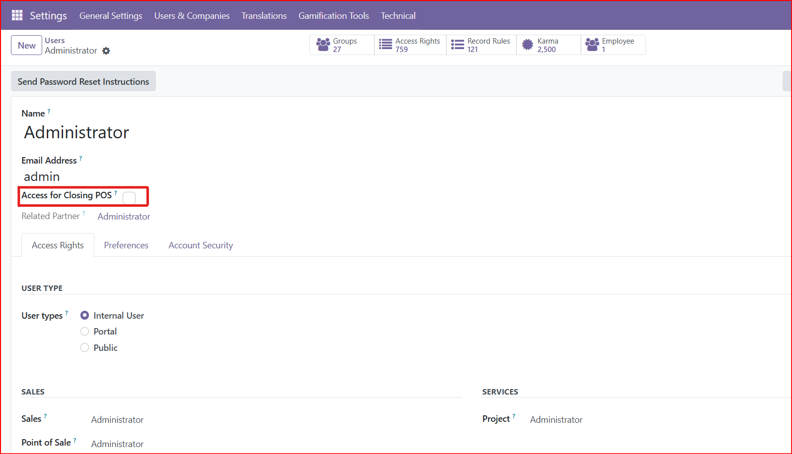
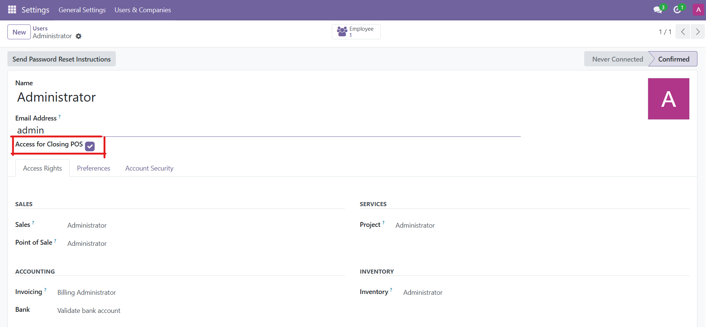
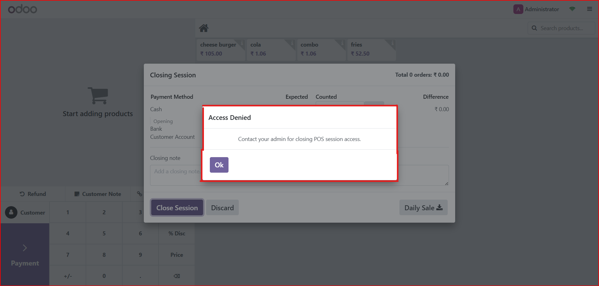

POS Session Close Access Control
Easily Restrict POS session closing to authorized users only.
Key Features
- Adds a checkbox Access for Closing POS in the Users form.
- Only users with this permission enabled can close a POS session.
- Unauthorized users will receive a warning popup when attempting to close the register
- Helps improve operational security in retail environments.
Usage Guide
- A new field Access for Closing POSis added to the Users form
- Add items to the cart
- When a user tries to close a POS session, the system checks the user's permission.
- If the permission is not enabled, the system prevents the session from closing and displays an alert.
Screenshots
1. Only Verify User can access pos session closing

2. once permission granted will close pos session

3. otherwise warning message will display
